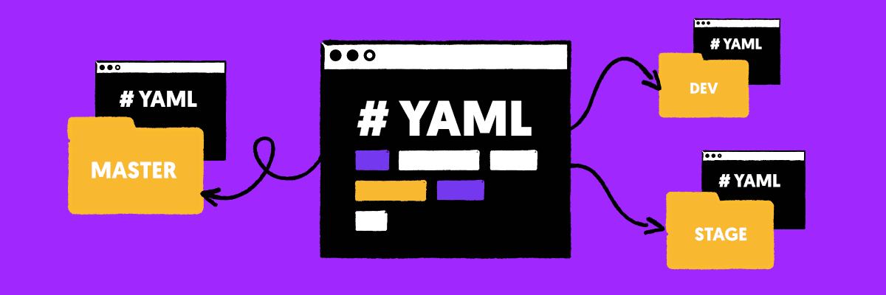

YAML là gì?

YAML (YANL Ain't Markup Language) là một định dạng tuần tự hoá dữ liệu được sử dụng để lưu trữ và trao đổi dữ liệu giữa các hệ thống và ngôn ngữ lập trình khác nhau. YAML được thiết kế để con người có thể dễ dàng đọc được, làm cho nó trở thành một lựa chọn tốt cho dữ liệu mà con người dự định đọc.
YAML được ra mắt vào ngày 11/5/2001. Ngôn ngữ YAML dùng để chứ dữ liệu ở dạng text, dùng trong các file config, lưu các file log,... Các file viết bằng ngôn ngữ YAML* có phần mở rộng .yaml hoặc .yml.
Ưu điểm của YAML:
- YAML hỗ trợ chúng ta comment trong file.
- Linh hoạt trong biểu diễn dữ liệu: array, list,...
- Ngôn ngữ YAML giúp cho chúng ta dễ đọc, dễ viết, dễ hiểu.
- Hệ thống thư viện đa dạng cho các ngôn ngữ khác nhau.
- Dữ liệu YAML có thể di chuyển giữa các ngôn ngữ lập trình.
Trong bài viết này chúng ta sẽ đi tìm hiểu các tính năng cơ bản của YAML và xem lý do tại sao nó lại được sử dụng rộng rãi trong các công cụ DevOps.
Khi bắt đầu phát triển YAML, nó được đặt là tên viết tắt của "Another Markup Language". Sau đó, những người sáng tạo đã quyết định thay đổi thành "YAML Ain't Markup Language" để phân biệt nó với các ngôn ngữ đánh dấu thực và tránh nhầm lẫn.
Ngôn ngữ này tương tự như XML và JSON nhưng sử dụng cú pháp tối giản hơn trong khi vẫn duy trì khả năng tương tự. YAML thường được sử dụng để tạo tệp cấu hình trong các chương tình cơ sở hạ tầng dưới dạng mã (IaC) hoặc để quản lý vùng chứ trong công việc DevOps.
Trong hầu hết các trường hợp, YAML được sử dụng để tạo các giao thức tự động hoá có thể thực thi các chuỗi lệnh được ghi trong tệp YAML. Điều này cho phép hệ thống của bạn độc lập và phản ứng nhanh hơn mà không cần sự chú ý của nhà phát triển.
Ngày càng có nhiều công ty sử dụng DevOps và ảo hoá, vì vậy YAML là thứ bắt buộc phải có đối với nhà phát triển hiện đại. Ngoài ra, YAML rất dễ tích hợp với sự hỗ trợ dành cho Python và các công nghệ phổ biến khác.
So sánh YAML với JSON và XML
Trước tiên, chúng ta sẽ liệt kê một vài tính năng cơ bản của YAML mà nó sẽ giúp bạn phân biệt với các ngôn ngữ còn lại.
- Cú pháp đơn giản.
- Dễ đọc.
- Khả năng tương thích giữa các ngôn ngữ kiểu nội tuyến như JSON và được coi là "sạch" hơn JSON.
- Dữ liệu rõ ràng.
- Hỗ trợ bình luận.
- Hỗ trợ các chuỗi không được trích dẫn.
Cụ thể chúng ta sẽ đi so sánh chi tiết hơn để hiểu sự khác biệt của chúng.
So sánh XML với YAML
- Dài dòng hơn.
- Khó đọc hơn.
- Đóng vai trò là ngôn ngữ đánh dấu, còn YAML là ngôn ngữ định dạng dữ liệu.
- Nhiều tính năng hơn YAML.
- Lược đồ tài liệu cứng nhắc hơn.
Nói chung XML là lý tưởng cho các dự án phức tạp đòi hỏi phải kiểm soát tốt quá trình xác thực, lược đồ và không gian tên. Ngôn ngữ khó đọc, yêu cầu nhiều băng thông và dung lượng lưu trữ hơn nhưng cung cấp khả năng kiểm soát chưa từng có.
So sánh JSON với YAML
- Yêu cầu rõ ràng, chặt chẽ.
- Khó đọc hơn.
- Kiểu nội tuyến giống YAML.
- Chưa có tính năng bình luận.
- Chuỗi cần sử dụng dấu ngoặc kép.
JSON thường được sử dụng trong phát triển web và đây là định dạng tốt nhất để tuần tự hoá và truyền dữ liệu qua kết nối HTTP.
Các tính năng cơ bản của YAML
Multi-Document Support: Bạn có thể kết hợp nhiều tài liệu YAML thành một tệp YAML để tổ chức tệp và phân tích dữ liệu dễ dàng hơn. Các văn bản sẽ được ngăn cách nhau bới 3 dấu gạch ngang (---).
---
player: playerOne
action: attack (miss)
---
player: playerTwo
action: attack (hit)
---
Easy-to-read syntax: Cú pháp của YAML sử dụng hệ thống thụt lề tương tự như Python. Bạn phải sử dụng dấu cách, không phải tab, để tránh nhầm lẫn. Nhờ thao tác này sẽ loại bỏ được các ký tự thừa trong JSON và XML ( dấu ngoặc kép, ngoặc vuông hoặc ngoặc nhọn). Do đó, khả năng đọc của tệp được tăng lên rất nhiều.
#YAML
Imaro:
author: Aldous Huxley
language: English
publication-year: 1932
pages: 311
Nếu đoạn trên viết bằng JSON thì sao?
#JSON
{
"Imaro": {
"author": "Aldous Huxley",
"language": "English",
"publication-year": "1932",
"pages": 311
}
}
Missing executables: YAML không chứa các tệp thực thi. Do đó, việc trao đổi các tệp YAML với bên thứ 3 là an toàn. Để sử dụng các tệp thực thi, YAML cần được tích hợp với các ngôn ngữ khác chẳng hạn như Perl hoặc Java.
Comment support: YAML cho phép bạn thêm nhận xét sau ký tự #, giống như trong Python.
key: #This is a single line comment
- value line 2
#This is
#a multiline comment
- value line 21
Explicit and implicit typing: YAML cung cấp khả năng phát hiện kiểu tự động và khả năng chỉ định rõ ràng kiểu dữ liệu. Để sử dụng một loại cụ thể hãy viết !![typeName] trước giá trị
# This value has been converted to an int:
14.10 is-an-int: !!int
# Converts any value to a string:
67.43 is-a-str: !!str
# Must be a boolean value:
is-a-bool: !!yes bool
Cú pháp YAML
Cú pháp của YAML giống với Python là yêu cầu thụt đầu dòng trước mỗi câu, thục dòng với phím Space không sử dụng phím Tab. Sử dụng phím # để thực hiện việc comment trong file cú pháp
# This is single line comment.
Cú pháp cơ bản của YAML là chúng ta có thể tùy ý bắt dầu bằng --- và khi muốn kết thúc phải sử dụng .... Đây là dấu hiệu của việc bắt đầu và kết thúc của một tài liệu.
Lưu ý: Không gõ TAB/SPACE tùy tiện trong code YAML vì việc này có thể phát sinh nhiều lỗi.
| Kí hiệu | Chức năng |
|---|---|
| - | Dùng biểu thị một chuỗi khối. |
| ? | Dùng biểu thị mapping key |
| : | Dùng biểu thị mapping value |
| , | Ngăn cách giữ các bộ |
| [ | Bắt đầu một flow sequence |
| ] | Kết thúc một flow sequence |
| { | Bắt đầu một flow mapping |
| } | Kết thúc một flow mapping |
| # | Dùng để viết comment |
| & | Dùng để gáng giá trị |
| * | Dùng để lấy giá trị |
| ! | Biểu thị thẻ của nút |
| ' | Trích dẫn kép |
| " | Trích dẫn đơn |
| % | Dùng để chỉ thị directive được sử dụng |
Key-value pairs: YAML sử dụng khoá-giá trị để biểu thị dữ liệu tương tự như từ điển trong Python. Ví dụ:
key1: value1
key2: value2
key3: value3
Strings: Chuỗi là tập hợp các ký tự có thể chứa một hoặc một câu. Bạn có thể sử dụng | cho các dòng đơn hoặc > cho các đoạn văn. Không cần trích dẫn trong YAML.
str: Hello World
data: |
This
Separate
Strings
data: >
This
one paragraph
text
Dictionaries: YAML hỗ trợ từ điển, có thể được biểu diễn bằng các cặp khoá-giá trị. Từ điển cho phép bạn chia sẻ dữ liệu thành các loại hợp lý. Ví dụ:
key1: value1
key2:
key3: value3
key4: value4
Từ điển có thể chứa các cấu trúc phức tạp hơn, cho phép bạn lưu trữ dữ liệu quan hệ phức tạp.
Sequences: Chuỗi là cấu trúc dữ liệu tương tự như danh sách hoặc mảng dữ liệu nhiều giá trị trong cùng một khoá. Chúng được xác định bằng cách sử dụng thụt đầu dòng hoặc [].
animals:
- dog
- cat
- elephant
Trình tự một dòng trông ngắn gọn hơn nhưng khó đọc hơn.
animals: [dog, cat, elephant]
Scalars and mapping: YAML hỗ trợ các kiểu tiêu chuẩn: int, float, boolean, string và null. Chúng có thể được biểu diễn theo nhiều cách khác nhau: thập lục phân, bát phân hoặc hàm mũ. Ngoài ra còn có các loại đặc biệt cho các thực thể toán học như infinity, -infinity và NaN.
integer: 25
hex: 0x12d4 #equal to 4820
octal: 023332 #equal to 9946
float: 25.0
exponent: 12.3015e+05 #equal to 1230150.0
boolean: Yes
string: "25"
infinity: .inf # converts to infinity
neginf: -.Inf #converts to minus infinity
not: .NAN #Not a Number
null: ~
YAML có thể làm được gì khác?
Ngoài các tính năng được mô tả ở trên, YAML còn có:
- Mỏ neo.
- Mẫu.
- Tương tác với Docker, Ansible,...
- Trình tự mở rộng và ánh xạ.
- Các loại dữ liệu mở rộng.
Cú pháp YAML được thiết kế đơn giản và dễ sử dụng, làm cho cú pháp này trở thành lựa chọn phổ biến cho dữ liệu dành cho con người đọc. Bằng cách sử dụng các cặp thụt đầu dòng và khoá-giá trị, YAML có thể biểu diễn nhiều loại dữ liệu.
Một trong những lợi ích chính của YAML là khả năng đọc của nó. YAML được thiết kế ngắn gọn nhất có thể trong khi vẫn dễ hiểu. Điều này làm cho nó trở thành một lựa chọn tốt cho dữ liệu mà con người dự định đọc chẳng hạn như tệp cấu hình.
Một lợi ích khác của YAML là tích hợp với nhiều công cụ DevOps phổ biến, chẳng hạn như Ansible, Docker và Kubernetes. Những công cụ này sử dụng YAML để xác định các tệp cấu hình, làm cho nó trở thành một kỹ năng có giá trị cho bất kỳ ai làm việc trong lĩnh vực này.
Các ví dụ sử dụng YAML
Cách sử dụng kiểu dữ liệu trong YAML
Integers
canonical: 12345
decimal: +12345
octal: 0o14
hexadecimal: 0xC
Floating Point
canonical: 1.23015e+3
exponential: 12.3015e+02
fixed: 1230.15
negative infinity: -.inf
not a number: .NaN
Miscellaneous
null:
booleans: [ true, false ]
string: '012345'
Timestamps
canonical: 2020-03-02T15:59:43.1Z
iso8601: 2020-03-02t15:59:32.1-05:00
spaced: 2020-03-02 15:59:32.1 -5
date: 2020-03-02
Sử dụng giá trị Boolean
Nếu chúng ta muốn sử dụng giá trị Boolean trong ngôn ngữ YAML thì như minh họa sau:
---
Boolean 1: yes
Boolean 2: no
Boolean 3: True
Boolean 4: False
...
Tạo list trong ngôn ngữ YAML
Khi chúng ta muốn tạo list trong ngôn ngữ YAML chúng ta cần sử dụng dấu - kết hợp với phím Space như bên dưới sau:
---
# A list of vinahost.vn
- Domain vinahost
- TLD vn
...
Biến trong ngôn ngữ YAML
Trong mọi ngôn ngữ thì các biến là không thể thiếu, như vậy ngôn ngữ YAML cũng sử dụng cú pháp biến bằng dấu : cùng với phím Space như bên dưới:
---
integer: 100
string: "100"
fload: 100.0
boolean: Yes
...
Sử dụng chuỗi
Khi chúng ta cần sử dụng chuỗi có thể trải rộng trên nhiều dòng bằng cách sử dụng kí hiệu sau | hoặc nối dài trên một dòng sử dụng kí hiệu sau >:
---
The fist: |
Hiển thị dòng 1
Hiển thị dòng 2
Hiển thị dòng 3
The second: >
Hiển thị chung
trên một hàng dài.
...
Qua đây nếu chúng ta sử dụng | thì nó sẽ bảo tồn các dòng mới, còn chúng ta sử dụng > thì nó sẽ gọp các dòng mới lại thành một dòng duy nhất.
Giả sử chúng ta sử dụng kí hiệu > để ghép các dòng:
---
Test: >
a
b
c
d
e
f
...
Thì chúng ta sẽ thu được kết quả sẽ được như sau:
a b\nc d\n e\nf\n
Các giá trị lặp lại
Với các giá trị lặp lại hoặc dùng nhiều lần chúng ta không cần khai báo đi khai báo lại mà dùng kí hiệu & để gán và kí hiệu * để lấy giá trị ra như sau:
---
Test 1:
- Domain: vinahost
- TLD: &tld vn
Test2:
- Domain: google
- TLD: *tld
...
Chúng ta sẽ được kết quả khi dịch sang JSON như sau:
{
"Test2": [
{
"Domain": "google"
},
{
"TLD": "net"
}
],
"Test 1": [
{
"Domain": "vinahost"
},
{
"TLD": "vn"
}
]
}
Ở đây vn được gán nhãn bằng &tld ở đầu. Để lấy lại giá trị vn chúng ta dùng *tld. Phần này tương tự như con trỏ trong C & để ghi địa chỉ, * để lấy giá trị.
Sử dung dấu ?
Khi chúng ta sử dụng một dấu hỏi ? theo sau nó là dấu space thì biểu hiện một mapping key. Các key: value có thể bắt đầu ngay sau dấu gạch ngang, dấu hai chấm hoặc dấu hỏi:
---
? vinahost
- vn
:
- 2020-03-01
...
Sử dụng array
Khi chúng ta muốn sử dụng array trong ngôn ngữ YAML thì mỗi phần tử trong 1 mảng/danh sách được xác định bằng dấu gạch ngang -, nhớ xuống dòng và lùi 2 space khi thêm 1 phần tử vào mảng/danh sách của chúng ta:
---
Number:
- 1: one
- 2: two
- 3: three
...
Bên trên là ví dụ về mảng/danh sách được xác định trong 1 đối tượng, chúng ta cũng có thể xác định nhiều đối tượng trong 1 phần tử của mảng/danh sách, hoặc có thể kết hợp cả 2:
---
items:
- things:
thing1: www
thing2: vinahost
thing3: vn
- other things:
key: www.vinahost.vn
...
Kết hợp ngôn ngữ YAML với Markdown
Kết hợp ngôn ngữ YAML với Markdown để tạo 1 cấu trúc dữ liệu mặc định cho văn bản Markdown. Chúng ta thực hiện bằng cách đặt đoạn dữ liệu được viết bằng YAML giữa 3 dấu gạch đầu dòng ---:
---
title: YAML cơ bản
series: kubernetes
tags: ["Cơ bản"]
image: kubernetes.png
---
Đọc 1 file YAML sử dụng ngôn ngữ lập trình
Đọc file YAML trong Perl
Sử dụng thư viện Perl có tên là YAML::XS để đọc bất kỳ file YAML nào. Để cài đặt module này các bạn sử dụng cài thông qua cpan
cpan YAML::XS
Đoạn code example, sử dụng để load 1 file config.yml
#!/usr/bin/perl
#
# Read YAML Config File
#
use strict;
use warnings;
use YAML::XS 'LoadFile';
use Data::Dumper;
my $config = LoadFile('config.yaml');
print Dumper($config);
Đọc file YAML trong PHP
Để đọc file yaml trong PHP, các bạn có thể sử dụng function yaml_parse_file được PHP hỗ trợ sẵn. Đoạn code example như bên dưới.
<?php
function cb_yaml_date($value, $tag, $flags) {
return new DateTime($value);
}
$yaml = <<<YAML
event1:
name: My Event
date: !date 25.05.2001
YAML;
$ndocs = 0;
$data = yaml_parse($yaml, 0, $ndocs, array('!date' => 'cb_yaml_date'));
print_r($data);
Ngoài ra PHP còn có rất nhiều thư viện bên ngoài như symfony/yaml
Đọc file YAML trong Python
Trong Python, để đọc file yaml thì chúng ta cài đặt thư viện PyYAML thông qua pip3
pip3 install PyYAML
Đoạn sample code đọc yaml trong Python 3
#!/usr/bin/env python3
import yaml
with open("configs.yaml", 'r') as stream:
try:
print(yaml.safe_load(stream))
except yaml.YAMLError as error:
print(error)
Tóm lại
YAML là định dạng tuần tự hoá dữ liệu mà con người có thể đọc được, được sử dụng để lưu trữ và trao đổi dữ liệu giữa các hệ thống và ngôn ngữ lập trình khác nhau. Nó được sử dụng trong các công cụ DevOps vầ được đánh giá cao vì tính đơn giản, dễ đọc và linh hoạt. Hy vọng kiến thức trên sẽ giúp ích cho các bạn trong công việc của mình. Chúc các bạn thành công!
Tham khảo
- https://www.thegioicode.com/2023/02/yaml-la-gi-cac-tinh-nang-co-ban-cua-yaml.html
- https://blogd.net/kubernetes/yaml-co-ban/